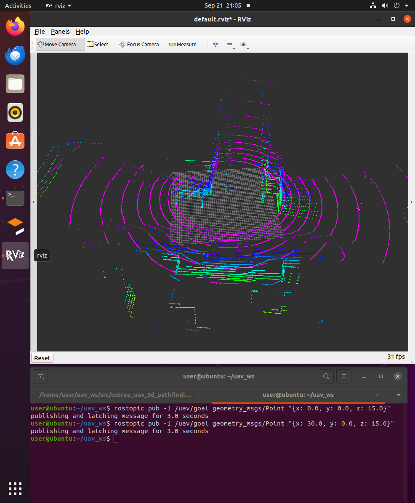
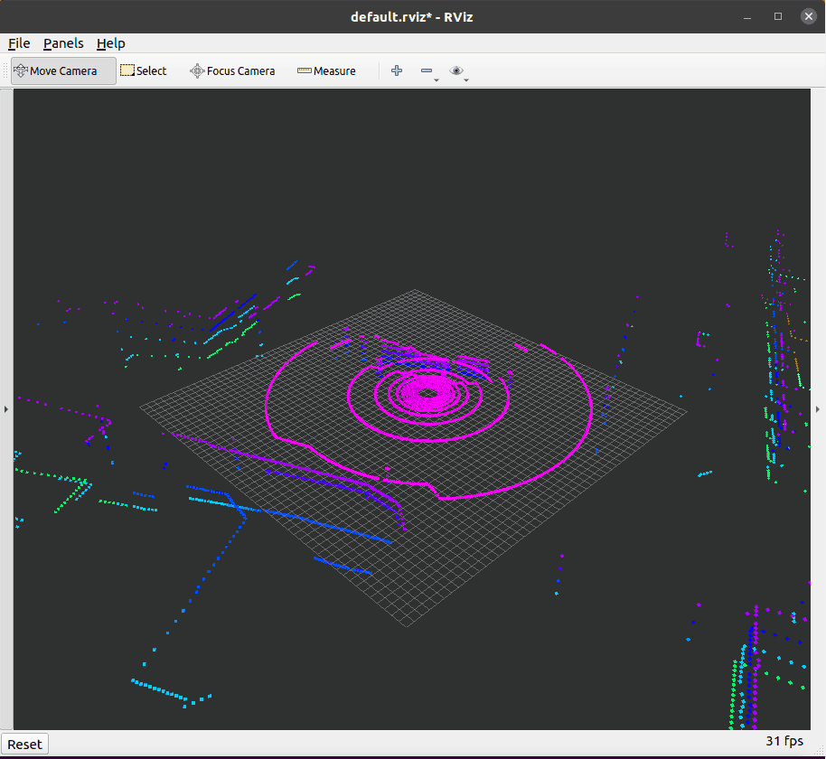
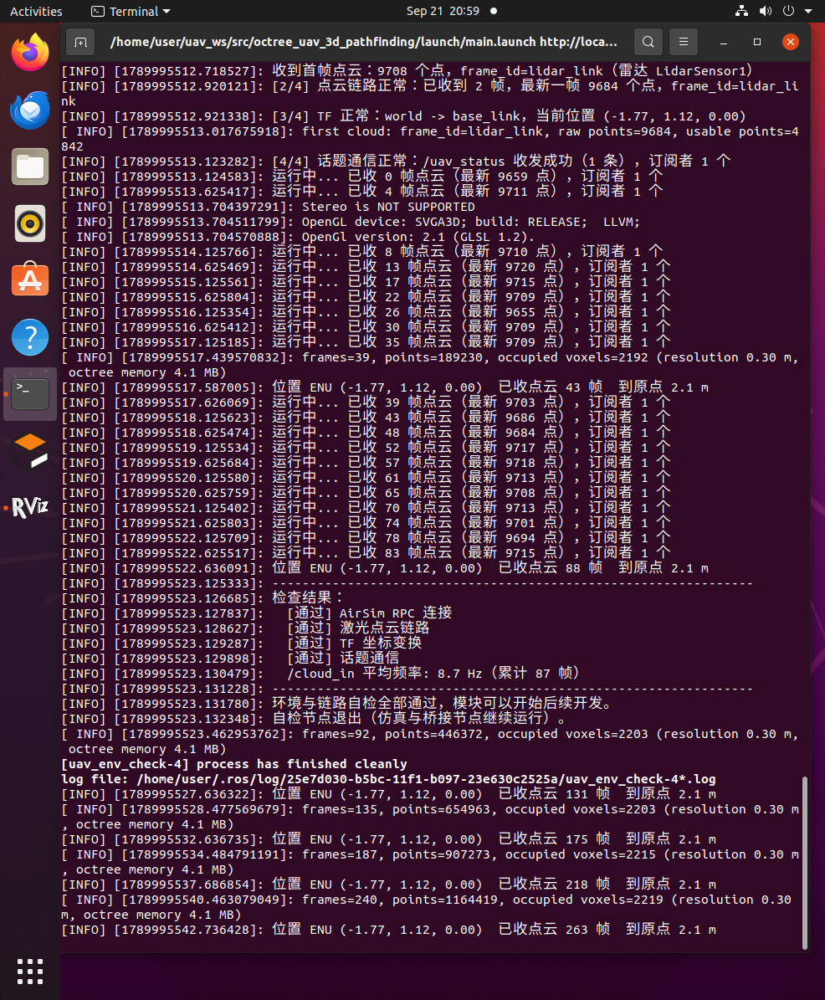

点云转八叉树占用地图
本文介绍空域载具八叉树三维寻路项目中的建图环节：把 3D 激光雷达的原始点云， 通过坐标变换与射线投射，增量地构建成一棵八叉树（octree）占用地图， 为后续在八叉树上做 A* 全局寻路提供"哪里有障碍、哪里可以通过"的几何依据。
对应总纲第 3 节「从传感器点云到占用地图」。
1. 输入：3D 激光雷达点云
输入话题是 /cloud_in，由桥接节点 airsim_bridge 从 AirSim 取回后发布
（桥接节点见 AirSim 载具与位置控制）。雷达参数写在模拟器的
settings.json 里：
| 项目 | 值 |
|---|---|
| 消息类型 | sensor_msgs/PointCloud2 |
| 水平视场 | 360 度 |
| 垂直视场 | 16 线，-40° ~ +10° |
| 量程 | 由 settings.json 的 Range 决定；建图侧用 max_range（默认 30 m）截断 |
| 频率 | 10 Hz |
| 每帧点数 | 约 9700（PointsPerSecond ÷ RotationsPerSecond = 100000 ÷ 10） |
每帧约 9700 个点、10 Hz，即每秒约 9.7 万个测量值。点云里的每个点都表示 "这条射线打到了这里"，但没有打到任何东西的射线在消息里是无效值 （NaN / inf），处理时必须先剔除。
为什么这里不用现成的
octomap_server：本项目的重点是讲清三维寻路的完整原理。 自己写插入逻辑，才能把"坐标变换 → 射线投射 → 概率更新"这条链路逐一展示出来； 相应地，节点名也叫pointcloud_to_octomap而不是直接复用octomap_server。
2. 坐标变换：从传感器坐标系到世界坐标系
激光雷达的点坐标是在传感器坐标系下的（本项目中点云的 frame_id 为 lidar_link）：
点 (1.0, 0, 0) 表示"正前方 1 m 处有障碍"。但地图必须是世界坐标系下的：
飞行器飞到别处之后，同一个障碍物在世界系里的坐标不能变。
因此每帧点云都要先做一次刚体变换：
其中 、 是 TF 树中 world ← lidar_link 的旋转与平移。
这条 TF 链由桥接节点建立：world → base_link 由位姿动态广播，
base_link → lidar_link 由雷达安装位置静态广播。旋转用四元数表示，
节点里直接由四元数构造旋转矩阵：
tf2::Quaternion rotation(q.x, q.y, q.z, q.w);
tf2::Matrix3x3 rot_matrix(rotation);
tf2::Vector3 p_world = rot_matrix * tf2::Vector3(p.x, p.y, p.z) + origin;
origin 同时还有一个用途：它正是射线投射的原点——所有激光都从雷达位置射出去。
为什么点云用本体系而不是世界系：模拟器
settings.json里的DataFrame选了SensorLocalFrame，点云直接在雷达本体系下输出。这样建图侧只需一次 TF 查询， 就同时拿到"点云到世界的变换"和"射线原点"，不必再为点云单独传一份位姿； 建图节点也因此与具体模拟器解耦。
3. 射线投射与概率更新
3.1 三个状态：占用、空闲、未知
一条激光射线的物理含义不只是"终点有东西"，还包含"这条线路上没有东西"。 octomap 把这个信息利用起来，每个体素因此有三种状态：
| 状态 | 含义 | 来源 |
|---|---|---|
| 占用（occupied） | 射线终点所在体素 | 射线打到了障碍物 |
| 空闲（free） | 射线途经的体素 | 射线从机体一路穿过去，说明沿途是空的 |
| 未知（unknown） | 从没有射线经过 | 还没扫描到 |
这一点是八叉树建图比"把点云体素化"更有价值的地方：空闲空间被显式清出来了。 如果只把点标记为占用，那么"没有点"既可能是空地也可能是没扫到，规划器无法区分， 就会把大片未知区域当成障碍，导致无解。
3.2 概率占用模型与 log-odds
实际传感器有噪声，一次测量不足以定论，octomap 用概率来描述每个体素：
- 命中一次，占用概率上调：（默认）
- 射线穿过一次，占用概率下调：（默认）
多个测量用 log-odds 形式累加，把乘法变成加法：
命中时加 ，穿过时加 。 概率被限制在 之间（clamping），这样一方面避免"一次误检就永久占用"， 另一方面也避免概率被反复累加到浮点饱和，导致后来的测量再也改不回来。
3.3 octomap 的接口
上面整套逻辑由 octomap::OcTree::insertPointCloud() 一次完成：
tree_.insertPointCloud(cloud, // 世界坐标系下的点云
octomap::point3d(ox, oy, oz), // 射线原点（雷达位置）
max_range_, // 最大量程
true, // lazy_eval
false); // discretize
tree_.updateInnerOccupancy();
lazy_eval = true：插入时只更新叶节点，父节点的占用状态先不回溯； 一帧插完后统一调用updateInnerOccupancy()。这样避免了每插一个点都往上爬树， 是 octomap 官方推荐的做法。- 八叉树的多分辨率特性在这里自然体现出来：大片空旷区域只用一个父节点表示， 只有障碍物附近才细分到 0.3 m 的叶节点。
4. 实现：pointcloud_to_octomap 节点
节点源码：src/air/octree_uav_3d_pathfinding/src/pointcloud_to_octomap.cpp
每收到一帧点云的处理流程：
- 查 TF：取
world← 点云frame_id的变换。优先用点云自带的时间戳； 若 TF 尚未更新到该时刻，退化为"取最新可用变换"并给出限频告警。 - 变换并过滤：逐点剔除 NaN/inf（未命中）与过近的点，再按
point_stride抽稀， 最后乘上旋转矩阵、加上平移，得到世界坐标下的点云。 - 射线投射：调用
insertPointCloud()，命中点记为占用、途经体素记为空闲。 - 发布：定时把八叉树发布出去，并把占用叶节点转成彩色立方体 Marker。
节点输出的两路结果：
| 话题 | 类型 | 说明 |
|---|---|---|
/octomap_full |
octomap_msgs/Octomap |
完整八叉树（含每个节点的概率），latched 发布 |
/occupied_cells_vis_array |
visualization_msgs/MarkerArray |
占用体素可视化，RViz 免插件直接显示 |
关于可视化方式：RViz 显示八叉树本来需要额外的 octomap_rviz_plugins 插件，
为了减少环境依赖，这里自己把占用叶节点转成 MarkerArray——每个占用叶节点一个
边长等于分辨率的立方体，并按高度着色（低处偏蓝、高处偏红），于是高度层次一眼可见。
/octomap_full 则留给后续的 A* 规划节点：它可以直接反序列化出同一棵八叉树。
5. 参数说明
参数位于 config/params.yaml 的 pointcloud_to_octomap 组，由 main.launch 载入。
| 参数 | 默认值 | 说明 |
|---|---|---|
| cloud_topic | /cloud_in | 输入点云话题 |
| world_frame | world | 世界坐标系，地图与可视化都建立在该坐标系下 |
| sensor_frame | lidar_link | 点云 frame_id 为空时的兜底坐标系 |
| resolution | 0.3 | 八叉树叶节点分辨率（m），最关键的一个参数 |
| max_range | 30.0 | 射线最大量程（m） |
| min_range | 0.5 | 最小量程（m），更近的点直接丢弃 |
| point_stride | 2 | 抽稀：每隔 N 个点取一个做射线投射 |
| prob_hit | 0.7 | 命中的占用概率 |
| prob_miss | 0.4 | 未命中（穿过）的占用概率 |
| clamp_min / clamp_max | 0.12 / 0.97 | 占用概率的上下限 |
| publish_rate | 1.0 | 地图与可视化的发布频率（Hz） |
| color_min_z / color_max_z | 0.0 / 25.0 | 体素着色的高度范围（m） |
| max_markers | 20000 | 单帧可视化的最大体素个数，防止 RViz 卡顿 |
| status_period | 5.0 | 状态日志周期（s） |
| cloud_timeout | 15.0 | 等不到首帧点云时的告警时间（s） |
调参建议：
- 性能是这里的主要矛盾。雷达一帧约一万个点，每个点一条射线，射线长度除以分辨率
就是需要更新的体素数量。逐点投射在虚拟机上跟不上，所以默认抽稀 2 倍、分辨率取 0.3 m、
量程收到 30 m。机器性能富裕时可以把
point_stride调回 1、resolution调到 0.2。 resolution从 0.3 调到 0.15，体素数量约变为 8 倍，内存和耗时都会明显上升。- 障碍物被"吃掉"（明明有障碍却显示可通行）通常是分辨率过大导致的，
可以把
resolution调小，或适当增大prob_hit。 - 体素全是同一个颜色，说明
color_min_z/color_max_z与实际高度范围不匹配。
6. 运行方法与效果
# 编译（本包从本节开始包含 C++ 节点）
cd ~/uav_ws && catkin_make
source ~/uav_ws/devel/setup.bash
# 一条命令启动：桥接 + 点云建图 + 环境自检 + RViz
roslaunch octree_uav_3d_pathfinding main.launch
前置条件：宿主上的模拟器必须已经启动（见环境配置与前置准备 第 5 节）， 并且
config/params.yaml里的host已改成你自己宿主机的 VMnet8 地址，否则桥接节点连不上。
只关心建图、不需要 RViz 时：
roslaunch octree_uav_3d_pathfinding main.launch rviz:=false
飞行器起飞后开始扫描，RViz 中的彩色体素随扫描范围逐渐生长； 再让飞行器飞到别处，就能看到地图沿着飞行轨迹不断扩展：
# 需要一个新的终端。目标点是 ROS 世界系 ENU
source ~/uav_ws/devel/setup.bash
rostopic pub -1 /uav/goal geometry_msgs/Point "{x: 30.0, y: 0.0, z: 15.0}"

飞行器移动过程中地图随时间生长：

建图节点每 5 秒输出一次统计信息，可以看到点云在持续进来、占用体素在增长：

7. 主要话题
| 话题 | 类型 | 方向 | 说明 |
|---|---|---|---|
| /cloud_in | sensor_msgs/PointCloud2 | 订阅 | 激光雷达点云（lidar_link 系） |
| /octomap_full | octomap_msgs/Octomap | 发布 | 完整八叉树地图（latched） |
| /occupied_cells_vis_array | visualization_msgs/MarkerArray | 发布 | 占用体素可视化 |
| /tf | tf2_msgs/TFMessage | 订阅 | 由桥接节点广播，用于把点云变换到世界系 |
排查用命令：
# 确认点云话题的消息类型是 sensor_msgs/PointCloud2
rostopic info /cloud_in
# 看点云频率（应约 10 Hz）
rostopic hz /cloud_in
# 看八叉树地图消息的频率
rostopic hz /octomap_full
参考
- OctoMap 官网
- Hornung et al., OctoMap: An Efficient Probabilistic 3D Mapping Framework Based on Octrees, Autonomous Robots, 2013
- octomap_msgs 消息定义
- 模块源码：
src/air/octree_uav_3d_pathfinding/
本文档及配套模块代码在编写过程中使用了 AI 大模型辅助（方案讨论、代码与文档起草、问题排查）。
全部内容经过实际运行验证：模块在 Ubuntu 20.04.6 + ROS Noetic + AirSim 1.8.1 环境下
通过 roslaunch octree_uav_3d_pathfinding main.launch 运行，并得到上述建图结果。
作者对提交内容的正确性与完整性负全部责任。